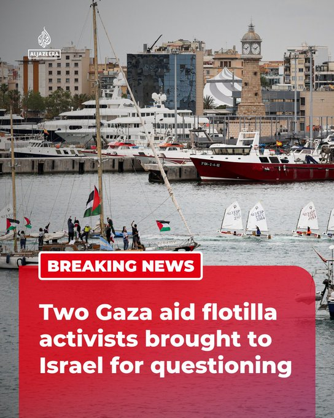

@AJENews
📝 原文: Two activists who participated in a Gaza-bound aid flotilla have been brought to Israel for questioning, according to the Israeli foreign ministry after the vessels were intercepted by Israeli forces.More onhttp://aljazeera.com
🇨🇳 译文: 据以色列外交部称，在船只被以色列军队拦截后，两名参加前往加沙的援助船队的活动人士已被带回以色列接受审问。


🕒 2026-05-02T10:49:26+00:00